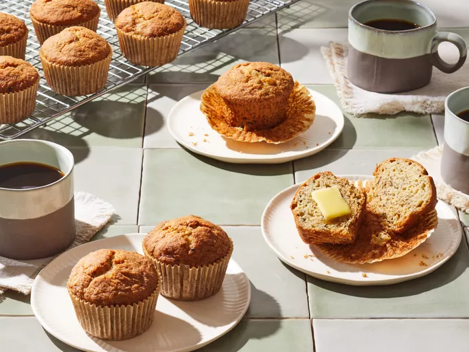

Banana Muffins Recipe

Description
It's time for a sweet recipe! Let's prepare some delicious banana muffins.
Consider that this is an easy recipe for kids!
Ingredients
- 1 1/2 cups of all-purpose flour
- 1 teaspoon baking powder
- 1 teaspoon baking soda
- 1/2 teaspoon salt
- 3 large ripe bananas, mashed
- 3/4 cup white sugar
- 1 large egg
- 1/3 cup butter, melted
Steps
- Preheat the oven to 175 degrees C°. Grease a 12-cup muffin tin or line cups with paper liners
- Sift flour, baking powder, baking soda, and salt together in a bowl; set aside
- Mix bananas, sugar, egg, and melted butter in a separate large bowl until well combined; fold in flour mixture until smooth
- Spoon batter into the prepared muffin cups, filling each 2/3 full
- Bake in the preheated oven until tops spring back when lighly pressed, about 25 to 30 minutes
- Cool briefly in the tin, then transfer to a wire rack to cool completely
This recipe was inspired from
Banana Muffins on AllRecipes